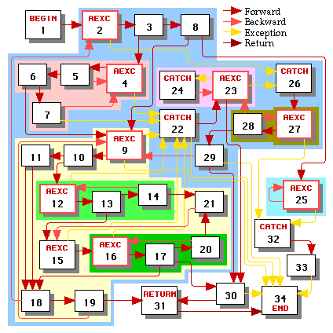
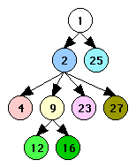

Electrical FireDesignPrimitive Graph FormatControl LayerControl Scheduling |
|
How do we convert a control graph into a linear instruction stream with branches? On this page we present an algorithm that should produce good code that tries to minimize the following:
In general, without additional information such as profiles we won't know how often individual control nodes are executed, so we can't produce an optimal dynamic schedule. Consider a simple if-then-else control graph below. There are 4! = 24 ways to order the four control nodes A, B, C, and D. Many of these result in several unnecessary branches; Figure 1 lists four reasonable orderings.
Order 1 |
Order 2 |
Order 3 |
Order 4 |
|
|---|---|---|---|---|
L0: A
bc L1
B
bra L2
L1: C
L2: D
return
|
L0: A
bnc L1
C
bra L2
L1: B
L2: D
return
|
L0: A
bc L1
B
L2: D
return
L1: C
bra L2
|
L0: A
bnc L1
C
L2: D
return
L1: B
bra L2
|
|
| Figure 1 | ||||
Here bc branches if the condition is true, bnc
branches if the condition is false, and bra branches unconditionally.
For simplicity we assume that the execution cost of any of the three kinds
of branches is the same, regardless of whether a conditional branch was
taken or not.
The code in orders 1 and 4 will execute two branches if it takes the path through B and one branch if it takes the path through C. The code in orders 2 and 3 will execute one branch if it takes the path through B and two branches if it takes the path through C. Without knowing the relative frequency of execution of B and C we don't know which order to prefer.
Nevertheless, there are assumptions we can make that are usually true in practice. We will assume that a loop is executed several times on the average so that the graph in Figure 2 should be scheduled using order 5 instead of order 6 because order 5 has in one fewer branch in each iteration of the loop even though order 6 has one fewer branch when the loop is executed zero times.
Order 5 |
Order 6 |
|
|---|---|---|
L0: A
bra L2
L1: C
L2: B
bc L1
D
return
|
L0: A
L1: B
bnc L2
C
bra L1
L2: D
return
|
|
| Figure 2 | ||
In brief, we schedule control nodes according to the following guidelines:
The scheduling process is described in more detail below. The stages are illustrated in green text using the example control graph from the control edge details page.
In this stage we discover the loop hierarchy tree. It's likely that this information will already be available from previous stages of the compiler. The results of this stage are illustrated in Figure 3.
|  |  |
| Control Graph | Loop Hierarchy Tree |
| Figure 3 | |
|---|---|
Since exception handlers are executed less frequently than the main body of the function, we'd like to schedule the main body without interference from control flow paths to or from exception handlers. We determine which nodes are in the main body of the function by marking the begin node and then taking the transitive closure of marking the targets of all forward and backward (but not return or exception) control edges whose sources are marked.
For the next few stages, we will call the main body nodes working nodes. All nodes outside the main body are non-working nodes.
The result of doing this process in our example is illustrated in Figure 4, in which all non-working nodes are greyed out.
| Control Graph | Loop Hierarchy Tree |
| Figure 4 | |
|---|---|
At this point we'll walk the loop hierarchy tree and schedule the leaf loops using the approach outlined below. After scheduling all subloops of a loop we can then schedule the loop. We ignore loops whose headers are non-working nodes -- such loops must consiste entirely of non-working nodes. Having scheduled all the loops in the main body of the function, we can then schedule the main body itself using the approach below.
In our example, we might schedule the loops in the following order: loop 4, loop 12, loop 16, loop 9, loop 2, loop 25, and then the main body (starts at node 1).
Let us now take a look at how to schedule one loop or the main body. We'll call the portion that we're scheduling (either a loop or the entire main body) a region REG.
We will produce a schedule SREG for region REG. SREG is a set of one or more cliques, where each clique is an ordered list of working nodes in REG. The order in which the cliques should be scheduled is not determined as long as the cliques are not interleaved.
Given a region REG:
We will define R to be the intersection of Rcombined and the set of all working nodes. We will also define RR to be the intersection of REG and the set of all working nodes.
In our example, if we're scheduling loop 2, REG is loop 2 and the above sets are as follows:
With each edge E: A->B for which at least one of A or B is in R, we associate a flag long(E) that states whether the edge E is a short or long edge. Informally, an edge is long if there is no reason to try to place node B immediately after node A.
We initialize the flag long(E) for each edge E: A->B for which at least one of A or B is in R as follows:
We will call a node N ready if each of its incoming edges E: A->N is long.
We will call a node N ready with respect to node P if, for each of N's incoming edges E: A->N, either E is long or A=P.
Let H be region REG's header (i.e. the function's begin node or the loop's header). We always make H be the first node in the first clique C1 of our region's schedule SREG.
Let P be the last node scheduled; initially P is H. As long either W or T isn't empty, we pick out the next node N to schedule as follows:
After we have picked node N, we remove N from the set W and make every edge from P to any node A remaining in W into a long edge. Then:
Having scheduled a node or clique, we continue with the next node or clique.
Correctness. Why are we guaranteed that (1) the algorithm will terminate and (2) not get stuck not able to choose any of the three alternatives? See the proof.
Step 3d will always produce a linear schedule SREG for a region REG, with the header H being the first node of the first clique C1. As Figure 2 illustrates, this is often not the best thing to do. We fix it as follows:
Let Ck be the last clique in SREG such that the last node N of Ck satisfies the following properties:
If such a clique Ck exists, we remove the last node N of Ck and prepend it to C1. Now as long as Ck ends with some node N' that satisfies all of the properties below, we remove N' from the end of Ck and prepend it to C1:
We stop either when Ck is empty or we stop at some node N'. If Ck is empty, we remove it from the list of cliques in SREG. At this point our schedule SREG is complete.
After we have scheduled the main body using the algorithm from section 3, we can schedule the exception handlers for the
function. Let {H1, H2, ..., Hn} be the catch nodes all of whose incoming
edges come from nodes that have already been scheduled (either in the main
body of the function or in other exception handlers that we scheduled).
If there are no such catch nodes and yet we haven't scheduled
every node in our function then we must have an exception handler that handles
exceptions from itself. When this happens we just make {H1,
H2, ..., Hn} be the set of all
remaining unscheduled catch nodes.
Now we create a phantom node H that has one long edges pointing to each of H1, H2, ..., Hn. We make our set of working nodes be all nodes reachable from H that have not been scheduled yet. We apply the algorithm from section 3 to H (and the subloops of its region) to schedule our set of exception handlers. If there are still unscheduled nodes, we go back to the beginning of section 4.
See the next page for the results of applying the scheduling algorithm to our Figure 4 example.